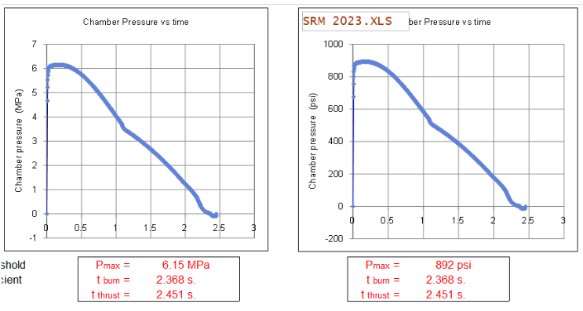

Metal Solid Propellant Motor
High Pressure KNSB Fine Grain Motor Development
1. Design Goals
본 연구는 고압 연소 환경(900 psi)을 견딜 수 있는 금속(Al6061-O) 케이싱 기반의 고체 로켓 모터를 개발하는 것입니다. 기존 PVC 파이프의 한계를 넘어 더 높은 비추력(Isp)과 구조적 안정성을 확보하고자 합니다.
Chamber Diameter
58 mm
Design Pressure (Pc)
900 psi
Propellant
KNSB Fine
Chamber Material
Al6061 - O
2. Thrust Curve Analysis
OpenMotor 및 엑셀 시뮬레이션을 통해 시간에 따른 연소실 압력과 추력을 예측하였습니다. KNSB Fine 추진제의 연소 특성을 반영하여 그레인 형상을 설계하였습니다.
3. Structural Design (CAD)
58mm 직경의 챔버와 노즐, 그리고 격벽(Bulkhead) 구조를 설계하였습니다. 오링(O-ring)을 이용한 기밀 유지 설계와 볼트 체결 방식을 적용하여 안전성을 확보하였습니다.

- Bolt: M3 SUS304 (Yield Strength 200 Mpa)
- Safety Factor: > 2.5
- Nozzle Throat: 9.15 mm